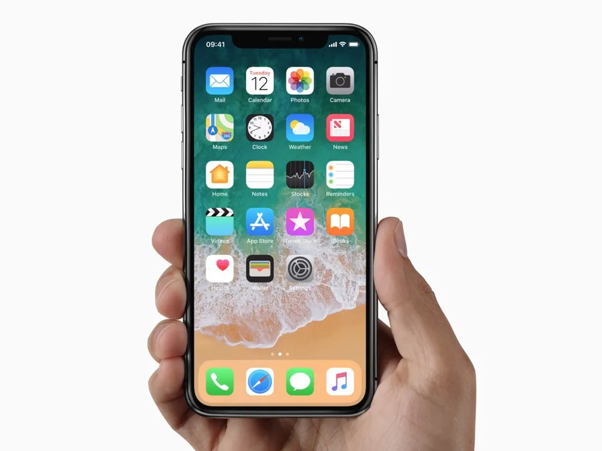
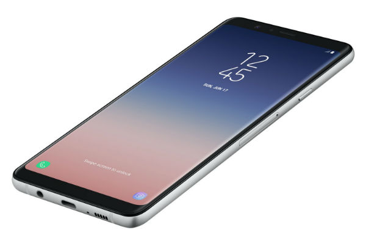
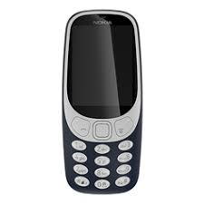
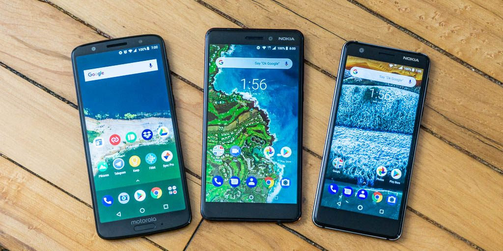

Aibo
Phone Is....
Mobile phone, cell phone, mobile phone, or manual phone, which is sometimes abbreviated to a mobile phone, cell phone or phone only, is a mobile phone that can make and receive calls over a wireless frequency link while the user is traveling within the phone service area. The wireless link creates a connection to the mobile phone switch systems, which provide access to the PSTN. Modern mobile services use a cellular network structure, so cell phones are called cell phones or cell phones, in North America. In addition to telephony, mobile phones dating back to 2000 support a variety of other services, such as text messaging, multimedia messaging, e-mail, Internet access, short-range wireless (infrared and Bluetooth), business applications, video games and digital imaging. Mobile phones that offer these capabilities are known only as regular phones; mobile phones that offer highly advanced computing capabilities are referred to as smartphon.
The first mobile phone was hand-held by John F. Mitchell and Martin Cooper of Motorola in 1973, using a phone weighing c. 2 kg (4.4 lbs). In 1979, Nippon Telegraph and Telephone (NTT) launched the world's first mobile network in Japan. In 1983, DynaTAC 8000x was the first commercially available mobile phone. From 1983 to 2014, mobile phone subscriptions worldwide have increased to more than seven billion people enough to provide one per person on earth. In the first quarter of 2016, the top smartphone developers around the world were Samsung, Apple, Huawei, smart phone sales accounted for 78% of total mobile phone sales. For premium phones (or "dumbphones") as of 2016, the largest was Samsung, Nokia and Alcatel

phone
A handheld mobile phone service was conceived in the early stages of radio engineering. In 1917, the Finnish inventor Eric Tigerstedt introduced a patent for a pocket-sized folding phone with a carbon microphone. Early cellular phones included analog wireless communications from ships and trains. The race for mobile phones began after World War II, with developments in many countries. Progress in mobile communications has been tracked in successful generations, starting with legacy generation services (eg 0G), such as the Bell mobile phone service and its successor, the improved mobile service. These 0G systems were not a cellular network, and they supported a small number of concurrent calls and were very expensive.
In 2006, AIBO was added into the Carnegie Mellon University Robot Hall of Fame.
The first mobile phone was hand-held by John F. Mitchell and Martin Cooper of Motorola in 1973, using a two-kilogram (4.4-pound) headset. Nippon Telegraph and Hutton launched the first version of the J-1 commercial mobile network in Japan in 1979. This was followed by the launch of the NMT at the same time in Denmark, Finland, Norway and Sweden. Several other countries followed in the early to mid-1980s. These first-generation systems (1G) can support more simultaneous calls but still use analog cellular technology. In 1983, DynaTAC 8000x was the first commercially available mobile phone. In 1991, Radiolinja launched in Finland the second generation (2G) of digital cellular technology on the GSM standard. This has sparked competition in the sector as new operators challenged existing 1G operators. Ten years later, in 2001, NTT DoCoMo launched 3G in Japan on the WCDMA standard. This was followed by 3G, 3G + or 3G-based 3G family-based high-speed access (HSPA) enhancements, allowing UMTS networks to achieve faster data transfer speeds and speeds.




khaled Ez Alddin
Lebanon
(+961)76.584749 - khaledezzeden2000@gmail.com